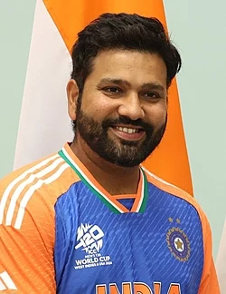

Rohit Sharma (born 30 April 1987) is an Indian international cricketer and the captain of the Indian national cricket team in limited-overs formats. He is known for his elegant batting style and ability to score big runs. Rohit holds the record for the highest individual score in ODI cricket, scoring 264 runs in a single match. He has also scored multiple double centuries in ODIs, which is a rare achievement in cricket. Rohit Sharma captains the Mumbai Indians franchise in the Indian Premier League, leading them to several championship victories.
